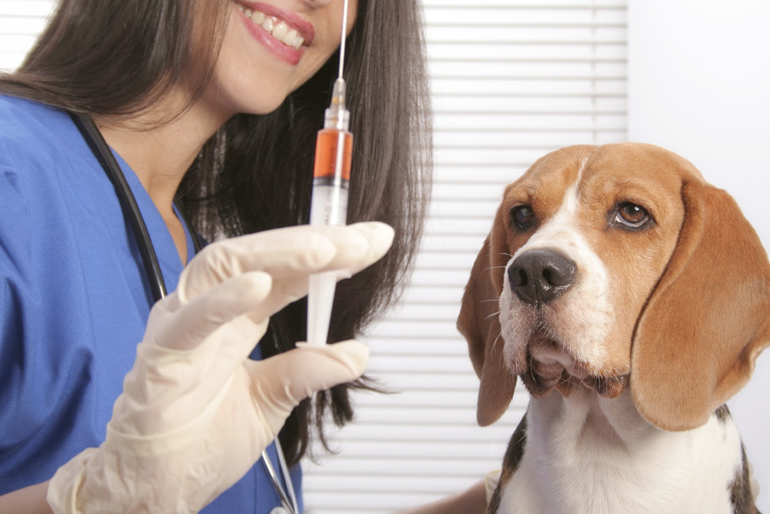
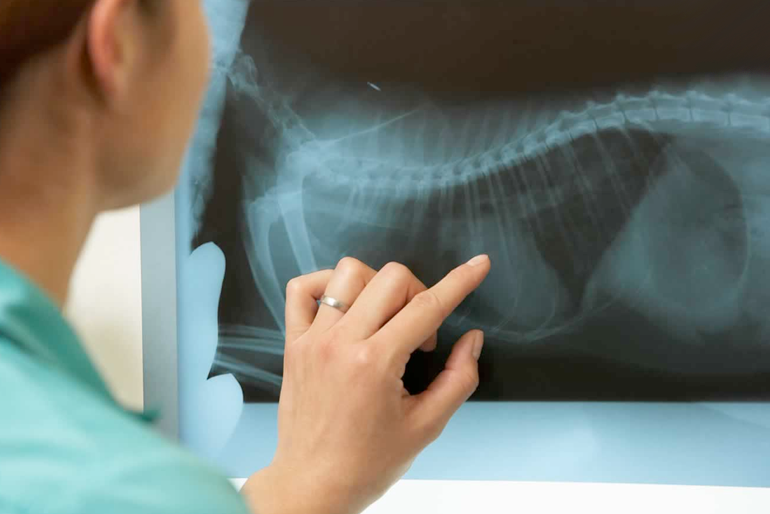

QUEM SOMOS?
A Veterinária iniciou suas atividades em 2018, na Ponta da Praia em Santos - SP, a fim de proporcionar saúde e cuidados diferenciados e de qualidade para os animais. Quer saber mais? Nos mande uma mensagem.
Medicina Veterinária Integrativa - Consultas a domicílio - Vacinas
 Os nossos serviços tem como objetivo a saúde e bem estar do seu melhor amigo. Contamos com uma equipe especializada no atendimento aos animais e seus proprietários.
ATENDIMENTO A DOMICILIO
Brenda Tundisi 2023 | Todos direitos reservados.